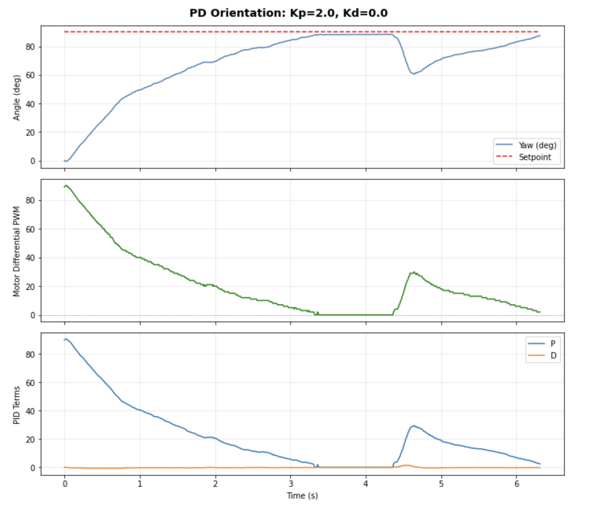

In this lab, the robot atempts a target yaw angle using a PD controller with feedback from the IMU gyroscope. The gyroscope is integrated over time to estimate heading, and a differential drive signal spins the robot in place to correct error.
The same BLE structure from Lab 5 was extended with five new commands starting at index 19. Gains and setpoint can be updated over BLE for fast tuning. The Artemis logs yaw, setpoint, motor differential, and PD terms each loop iteration, then sends them back after the run.
// Lab 6 commands
START_ORI, // 19
STOP_ORI, // 20
SEND_ORI_DATA, // 21
SET_ORI_GAINS, // 22
SET_ORI_SETPOINT, // 23A hard stop cuts motors after 10 seconds to keep it from flipping out & escaping.
I used a PD controller because P-only caused overshoot past the setpoint by ~10°ish. Adding a D term dampened the approach by resisting the rapid angular velocity change near the target. It was only slightly needed. I used P=2.0 D=.1.
The D term is implemented using the raw gyro rate directly rather than differencing the integrated yaw to avoid issue mentioned in instruction. Since yaw is itself an integral of gyro, the derivative of yaw is just the gyro and it avoids double-differencing noise.
// D term uses raw gyro rate, not d(yaw)/dt
float raw_d = imu.gyrZ() - gyro_bias_z;
ori_deriv_filtered = ALPHA * raw_d + (1.0 - ALPHA) * ori_deriv_filtered;
float d_term = -ori_Kd * ori_deriv_filtered;A gyro bias calibration runs on boot w/ 200 samples while the robot is stationary to remove constant drift offset.
Error is wrapped to [-180°, 180°] so the robot always takes the shorter path to the setpoint. A 2° deadzone chills the motor chatter when close.
The spinning deadband is 135, slightly lower than measured in Lab 4. It's higher than the driving deadband (~65 PWM) due to added friction of spinning in place on both axles simultaneously.
Final gains: Kp = 2.0, Ki = 0.0, Kd = 0.1.
The ICM-20948 gyroscope was read in non-blocking mode. The gyro has a configurable full-scale range so at the default ±250° per second and it saturates if the robot spins fast, so can increase if faster maneuvers are needed in later labs. Gyro integration accumulates drift over time, but for 6-second runs the error was fine (negligible) after bias correction.
With P-only at Kp=2.0 the robot overshot to ~100° from a 90° setpoint. Adding Kd=0.01 eliminated the overshoot and the robot settled cleanly at the target. The controller also held position when pushed, returning to setpoint after external perturbation like last lab.

Three trials aiming for 90 deg including setpoint changes and perturbation recovery:
Video: Orientation PD control holding target yaw, responding to setpoint changes, and recovering from perturbations. Final trial lengthed time to show pertubation resistance. Quality is better because I charged the battery.